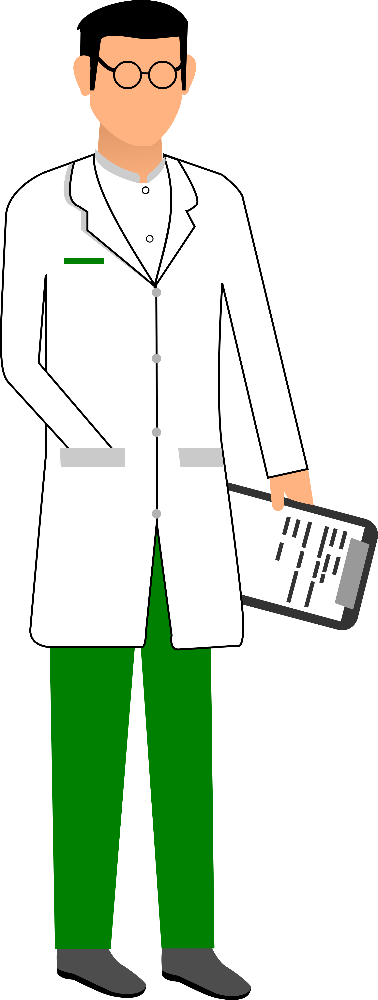
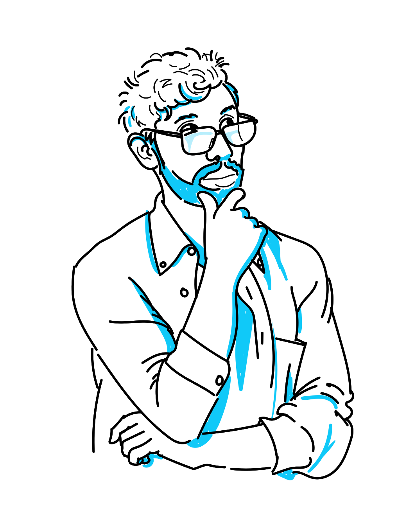
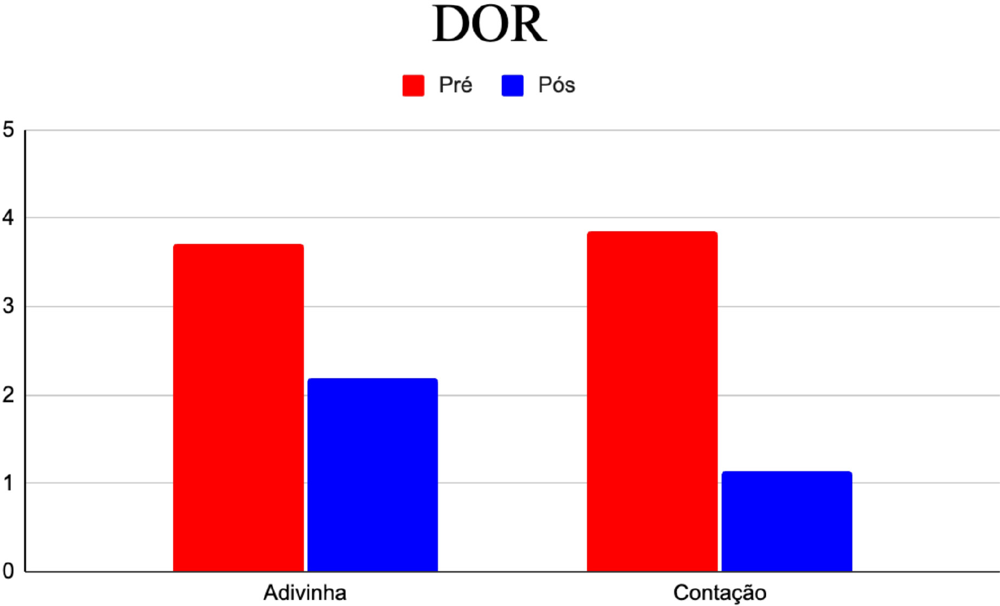
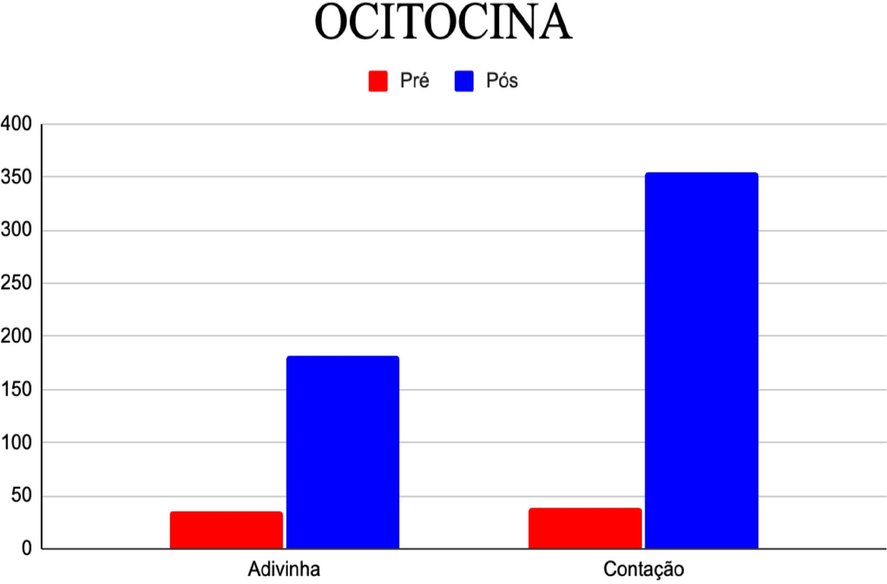
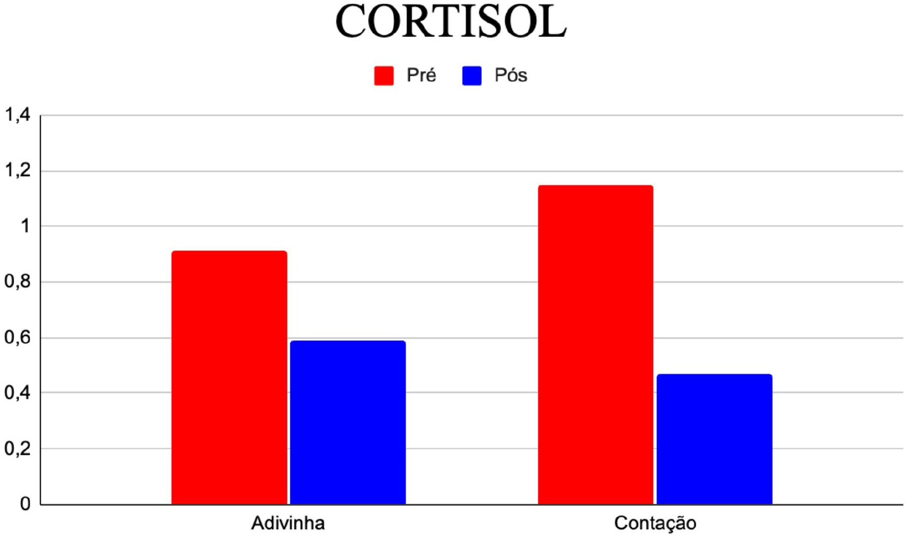
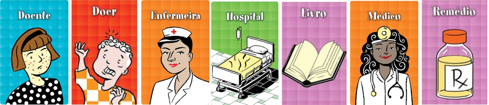

Narrativas que atravessam o corpo
A linguagem modifica a experiência.

Era uma vez...
Essa história se passa na cidade de São Paulo,
quando cientistas fizeram uma experiência com crianças internadas na UTI em um hospital da Rede D'or.

As crianças foram divididas em dois grupos. Um grupo ouviria histórias contadas por voluntários experientes.
O outro grupo iria interagir com os mesmos voluntários, pelo mesmo tempo, mas jogariam um jogo de advinha.

O que será que esses cientistas descobriram?
E então veio a resposta...
Depois de ouvir histórias por alguns minutos, muitas crianças demonstraram sentir menos dor, ficaram mais calmas e passaram a enxergar o hospital de forma menos assustadora.
Nos exames, os cientistas também perceberam mudanças no corpo: aumentou a ocitocina, hormônio ligado ao afeto e ao bem-estar, enquanto o cortisol, relacionado ao estresse, diminuiu.
Já no grupo que participou apenas das adivinhas, os efeitos positivos também apareceram, mas de forma menor.
No fim, a descoberta foi clara: histórias não servem apenas para entreter. Elas podem acolher, aliviar e ajudar crianças a enfrentar momentos difíceis com mais coragem.

Dentre as que ouviram a contação de histórias,
41,4% indicaram um expressivo alívio,
passando do nível 5 ou 6 para o nível 1,
que significa nenhum incômodo.
No grupo de crianças que brincaram com adivinhas,
os resultados também foram positivos:
67,5% das crianças indicaram alguma melhora na sua percepção.
Mas apenas 12,5% passaram dos níveis 5 e 6
para a sensação de alívio completo (1).

A quantidade de crianças em que se verificou
aumento de ocitocina foi superior entre as que
ouviram histórias. Nesse grupo, as variações foram
bastante amplas: algumas apresentaram apenas aumentos discretos,
enquanto outras alcançaram elevações próximas a 3.000%.
No grupo controle, registrou-se algo não observado entre os
participantes que ouviram histórias: casos sem alteração e até
reduções nos níveis de ocitocina.

Ainda que o cortisol tenha diminuído para a maior
parte das crianças de ambos os grupos, a redução foi mais
acentuada e mais frequente entre aquelas que ouviram histórias

A contação de histórias provocou o uso de mais marcadores
lexicais positivos ao descrever a experiência hospitalar em comparação
com os utilizados por quem se envolveu com adivinhas:
Dentre as que ouviram histórias, foram empregadas 36 palavras que expressam
emoções positivas ao falar sobre enfermeira,
enquanto apenas 20 foram usadas por aqueles a quem
foram propostas adivinhas.
A imagem de uma médica originou 31
palavras positivas entre os que participaram da contação e somente 14
entre os que brincaram com adivinhas.
já a imagem referente a hospital suscitou 23 palavras
associadas a emoções negativas
no grupo controle e apenas 6 entre os que ouviram histórias.
Transporte Narrativo
Uma das possíveis explicações para esse efeito é um processo conhecido
como transporte narrativo. Essa expressão descreve uma sensação
que todo leitor de ficção já experimentou: o afastamento de si
mesmo e da circunstância presente durante o mergulho na situação
construída pela história
Ainda há muito o que compreender sobre o papel das
histórias e sobre como as características das narrativas
podem produzir efeitos sobre o leitor ou ouvinte.
Mas já conseguimos saber que não é apenas simples entretenimento,
ouvir histórias permite que as crianças simulem diferentes
mundos mentais e façam abstrações que aprimoram sua compreensão
dos próprios sentimentos, das suas emoções e de seus cuidadores
ajudando as crianças a lidarem com situações desafiadoras da vida real.
Fonte: ARTIGO ORIGINAL • Ciênc. educ. (Bauru) 31 • 2025 •
Leia o artigo científico completo